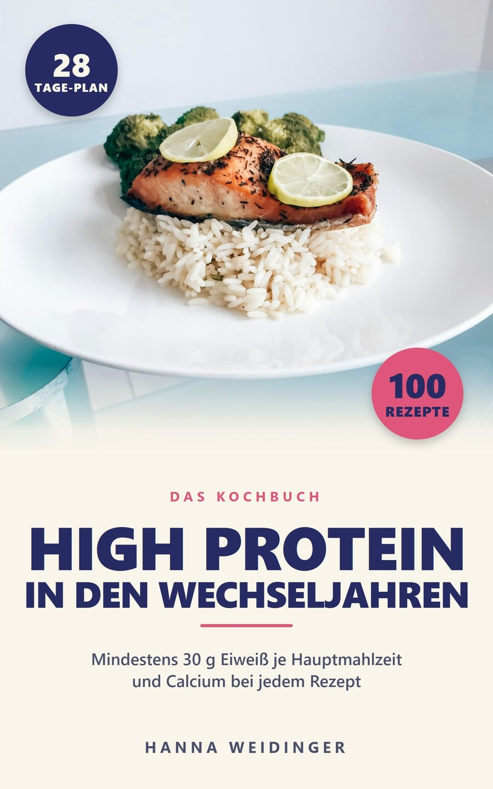

Baustein 1 · Blech
Ein Blech Gemüse
Im Reel: „Ein Blech Gemüse.“ Ein Blech frisches Gemüse vorrösten als vorbereitete Grundlage für mehrere Tage (Clip: Max Griss, Pexels Video 36825057).
Baustein-Prinzip · zum Reel · Plan Nr. 3
Lieber Bausteine kochen: ein Blech Gemüse, ein Topf Getreide – und jeden Tag anders zusammenstellen.
Was diese Seite enthält – und was nicht: Hier steht das Baustein-Prinzip genau so, wie es das Reel zeigt: ein Blech Gemüse, ein Topf Getreide, jeden Tag neu kombiniert. Im Reel selbst stehen keine Grammangaben, keine Ofentemperaturen, keine Kochzeiten und kein festes Rezept. Die ergänze ich hier nicht.
Direkt mit Einkaufsliste nachkochen: Wenn du genau dieses Prinzip einmal komplett ausgerechnet brauchst – mit Einkaufsliste nach Abteilungen, Ablaufplan und fünf verschiedenen Tellern für Mo–Fr –, findest du das in Plan Nr. 1: Sonntag in vier Schritten.
Bausteine statt gleicher Boxen
Die Sätze stehen wortgleich als Text im Video. Darunter liegt jeweils ein Pexels-Foto oder -Clip zur Szene, kein fertiges Rezept.
Baustein 1 · Blech
Im Reel: „Ein Blech Gemüse.“ Ein Blech frisches Gemüse vorrösten als vorbereitete Grundlage für mehrere Tage (Clip: Max Griss, Pexels Video 36825057).
Baustein 2 · Topf
Im Reel: „Ein Topf Getreide.“ Parallel eine Basis aus Getreide oder Reis im Topf garen (Clip: setengah lima sore, Pexels Video 37011437).
Prinzip · Alltag
Im Reel: „Jeden Tag neu kombiniert.“ Statt fünfmal dieselbe Dose abzufüllen, stellst du die Bausteine unter der Woche unterschiedlich zusammen (Foto: Justin Doherty, Pexels Foto 4929706).
Vorbereitung · Sonntag
Im Reel: „Speichern für Sonntag.“ Am Sonntag vorbereiten und ordentlich wegpacken, damit unter der Woche Zeit bleibt (Clip: Sarah Chai, Pexels Video 7250211).
Welches Gemüse, welches Getreide und wie viel davon, nennt das Reel nicht. Deshalb steht es hier auch nicht. Den komplett ausgerechneten Wochenplan nach diesem Prinzip, mit Einkaufsliste und Ablauf, findest du in Plan Nr. 1.
Die Reihe
Dieses Baustein-Prinzip stammt aus dem Reel und ist kein abgeschriebenes Buchrezept. Hier sind die derzeit lieferbaren Titel der Reihe, mit echten Amazon-Links. Ein weiterer Band zum Thema Meal Prep folgt nach dem 10. Dezember 2026.

Band 1
Schnelle Alltagsrezepte, ein 28-Tage-Plan und fertige Einkaufslisten.

Band 2
Alltagstaugliche Rezepte, 28-Tage-Plan und fertige Einkaufslisten.

Band 3
Alltagsrezepte, 28-Tage-Plan und Einkaufslisten für die Woche.

Band 4
Eiweißreiche Alltagsrezepte ohne Pulver und ohne Shakes, mit 28-Tage-Plan und Einkaufslisten.

Band 5
Rezepte für große Portionen, 28-Tage-Plan und Einkaufslisten.

Band 6
Rezepte mit 30 g Eiweiß je Hauptmahlzeit, Calciumwert je Rezept, 28-Tage-Plan und Einkaufslisten, ohne Pulver.

Band 7
Das Kochbuch mit 8 Wochenplänen und 100 Gerichten: sonntags vorkochen, jeden Tag anders.
Auf der Amazon-Serienseite siehst du alle zugeordneten Bände im Überblick.
Bitte beachten
Die Bücher und diese Seite ersetzen keine medizinische oder ernährungstherapeutische Beratung. Bei gesundheitlichen Fragen wende dich an eine Ärztin, einen Arzt oder eine qualifizierte Fachperson.
Texte auf dieser Seite und die Bücher der Reihe sind unter Verwendung digitaler Werkzeuge entstanden.